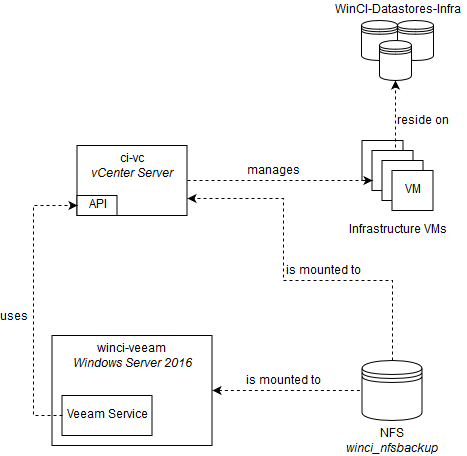

Infrastructure backups
This document describes current backup system configuration for Contrail Windows CI.
Table of contents
Current backup setup
Diagram below presents an overview of current backup setup for Contrail Windows CI.

- Contrail Windows CI underlying infrastructure is based VMware vSphere
- Services support Contrail Windows CI are running on a set of Infrastructure VMs
- Infrastructure VMs reside on
WinCI-Datastores-Infradatastore cluster - WinCI-Datastores-Infra datastore cluster consists of an independent set of SSD-based datastores
- independent, meaning these datastores are used solely for Infrastructure VMs
- Backups are performed using Veeam Backup & Replication software
- Veeam Backup Free Edition is used
- Veeam is installed on
winci-veeam, Windows Server 2016 virtual machine winci-veeamhas a mounted NFS sharewinci_nfsbackupwhich is used as a backups repository- Veeam connects to vSphere cluster using vSphere API
- Veeam performs full VM backups (using VeeamZIP feature in the Free edition)
Backups are performed regulary using Windows Scheduled Tasks.
Currently scheduled task runs every day, at 10 PM PST.
Scheduled task executes a PowerShell Script Backup.ps1 located in C:\BackupScripts\ directory.
Backup procedure looks as follows:
- Backups are performed by a set of PowerShell scripts
- Scripts are located in
backups/directory in contrail-windows-ci repository
- Scripts are located in
Backup.ps1script performs the following steps:- Prunes backups by removing all but last N backups
- N is configurable in the script
- Uses VeeamZIP PowerShell cmdlets to perform a full backups of VMs listed in
Backup.ps1file
- Prunes backups by removing all but last N backups
- If an error occurs for any of the VMs listed, script continues its job. After performing backups for other VMs it terminates with an exception
- Each full backup is stored in a separate directory, located in
\\winci_nfsbackups\Backups\directory on backup NFS share
VM recovery guide
Current backup setup supports only full VM recovery. It needs to be performed, e.g. when:
- in case of underlying infrastructure hardware failure (e.g. corrupted disk, ESXi host failure)
- in case of bricking an operating system/virtual machine
- recovery of VM state from a certain point in time is desirable
Prerequisites to backup scripts updating:
- Windows 10/Windows Server 2016 machine to perform the steps
- Credentials to
winci-veeamserver- Please contact Windows CI team
To recover a VM from backup perform the following steps:
- Establish a RDP connection
winci-veeamserver - Open
Veeam Backup & Replication Console- program is available through Start menu
- Veeam login window should open up
- ensure that
localhostand port9392are selected andUse Windows session authenticationoption is selected - click
Connect
- ensure that
- In the upper left corner click an option
RestoreSelect backup file to restorewindows should open up- Click
browse - In the address bar type in
X:\Backups\ - A list of directories named with date timestamps should show up
- Select a directory with a date, matching your desired restore point
- Enter this directory
- Select a backup file (file with
.vbkextension) which has prefix matching VM to be restored - Click
Open
- Progress bar named
Reading the backup file, please wait...should show up - When a table named
Contained VMsappears, select a VM to be restored, clickRestore; clickingRestoreopens up contextual menu; click optionEntire VM (including registration) - After a few moments a restore wizard should show up
- In
Virtual machinesection- From a table
Virtual machines to restoreselect a VM to be restored - Click
Next
- From a table
- In
Restore Modesection- Select
Restore to the original locationoption - Make sure
Restore VM tagsoption is checked - Make sure
Quick rollbackoption is unchecked - Click
Next
- Select
- In
Reasonsection- Enter a reason for VM restoring into
Restore reasonstextbox - Click
Next
- Enter a reason for VM restoring into
- In
Summarysection- Verify VM details presented in
Summarytextbox - Check
Power on target virtual machineoption if you want the restored VM to power on after restoration is completed - Click
Finish
- Verify VM details presented in
VM Restorewindow with progress report should appear- Window can be closed by clicking
Closebutton, this will not stop the restore procedure
- Window can be closed by clicking
- To open up
VM Restorewindow again- Click
Historybutton in the lower left corner of Veeam Console - In the tree (in the left middle part of the Veeam Console) select
Restore > Full VM Restorebranch - A list of restore jobs should appear in the middle
- Double-click a job corresponding to a VM you are currently restoring
VM Restorewindow should open up again
- Click
- When a restore job finishes, verify if all services provided by the machine are up and working
Backup scripts update guide
Backup scripts need to be updated, e.g. when:
- A list of VMs requiring backup changes
- A bug was fixed in the backup scripts
Prerequisites to backup scripts updating:
- Windows 10/Windows Server 2016 machine to perform the steps
- Credentials to
winci-veeamserver- Please contact Windows CI team
To update backup scripts perform the following steps:
-
Clone
contrail-windows-cirepository and enterbackups/directorypowershell PS C:\Users\user> git clone https://github.com/Juniper/contrail-windows-ci.git PS C:\Users\user> cd contrail-windows-ci\backups PS C:\Users\user\contrail-windows-ci\backups> -
Establish a PowerShell session with
winci-veeamserverpowershell PS C:\Users\user\contrail-windows-ci\backups> $session = New-PSSession -ComputerName 10.84.12.29 -Credentials $(Get-Credential) -
Copy
backupsdirectory's contents towinci-veeamserver, toC:\BackupScriptsdirectorypowershell PS C:\Users\user\contrail-windows-ci\backups> Copy-Item .\* C:\BackupScripts -ToSession $session -
Close PowerShell session
powershell PS C:\Users\user\contrail-windows-ci\backups> Remove-PSSession $session